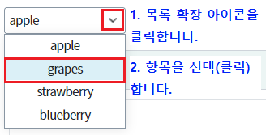
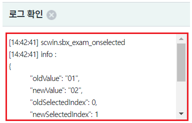
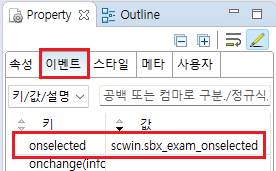
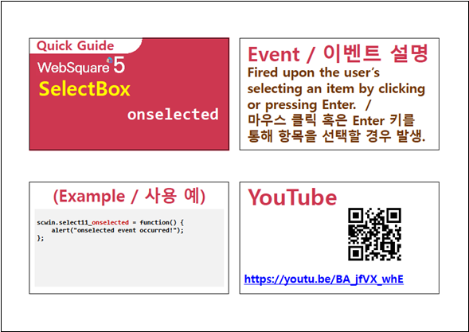

컴포넌트의 이벤트 onselected 예제입니다. 키보드 방향키를 이용해 항목을 선택하거나, 마우스 클릭 또는 스크린 터치를 이용해 항목을 선택했을 때 발생합니다. 로그 확인 영역과 브라우저 개발자 도구의 콘솔에 로그가 출력됩니다.
항목이 선택되었을 때 이벤트 정보 출력하기
STEP1. 컴포넌트의 항목을 선택합니다.
그림 1.브라우저(Chrome) 실행 예시 - 목록 확장 및 선택

항목이 선택되면 이벤트 onselected 핸들러에 작성된 스크립트가 실행됩니다.
영역 [로그 확인]과 브라우저의 개발자 도구 콘솔에 핸들러에 전달된 파라미터가 출력됩니다.
[브라우저(Chrome) 실행 예시]

예제 파일에서는 핸들러로 사용할 함수명을 다음과 같이 정의하였습니다.
onselected : scwin.sbx_exam_onselected
그림 2.웹스퀘어5 SP5 스튜디오의 Property View(속성창)의 이벤트 탭 예시

[소스 코드 예시]
<!-- selectbox의 소스 본문 예시 --> <xf:select1 ev:onselected="scwin.sbx_exam_onselected" id="sbx_exam1"> <!-- 중략 --> </xf:select1>
STEP2. 핸들러 함수 scwin.sbx_exam_onselected를 정의합니다.
[소스 코드 예시]
/** * sbx_exam1 컴포넌트의 이벤트 onselected 핸들러 */ scwin.sbx_exam_onselected = function(info) { var _newSelectedIndex = info.newSelectedIndex; //선택된 항목의 index var _newValue = info.newValue; //선택된 값 var _oldSelectedIndex = info.oldSelectedIndex; //이전에 선택된 항목의 index var _oldValue = info.oldValue; //이전 값 //console.log("scwin.sbx_exam_onselected >> ", info); //이벤트 확인용 로그 출력 //로직 구성 };
onselected
[웹스퀘어5 SP5 개발 가이드] SelectBox
링크 : https://docs1.inswave.com/sp5_user_guide/8df43d1f59fab704#641326163f434b17
[웹스퀘어5 SP5 개발 가이드] SelectBox onselected
링크 : https://docs1.inswave.com/sp5_user_guide/8df43d1f59fab704#59adf1e33e85188f
SelectBox onselected
링크 : https://youtu.be/BA_jfVX_whE
